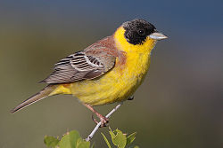
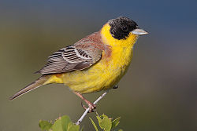

| Black-headed Bunting | |
|---|---|
|  | |
| Adult male | |
| Conservation status | |
| Binomial name | |
| Emberiza melanocephala Scopoli, 1769 |
| Black-headed Bunting | |
|---|---|
|  | |
| Adult male | |
| Conservation status | |
| Binomial name | |
| Emberiza melanocephala Scopoli, 1769 |
The Black-headed Bunting, Emberiza melanocephala, is a passerine bird in the bunting family Emberizidae, a group now separated by most modern authors from the finches, Fringillidae.
It breeds in southeast Europe east to Iran. It is migratory, wintering in India. It is a rare but regular wanderer to western Europe.
Black-headed Bunting breeds in open scrubby areas including agricultural land. It lays 4-6 eggs in a nest in a tree or bush. Its natural food consists of insects when feeding young, and otherwise seeds.
This bird is 17 cm long, larger than Reed Bunting, and long-tailed. The breeding male has bright yellow underparts, chestnut upperparts and a black hood.
The female is a washed-out version of the male, with paler underparts, a grey-brown back and a greyish head. The juvenile is similar, and both can be difficult to separate from the corresponding plumages of the closely related Red-headed Bunting.
The call is a soft zrit, and the song is a jerky zrit..zrit…zrit…srut..srut…srut.

{kind=link}